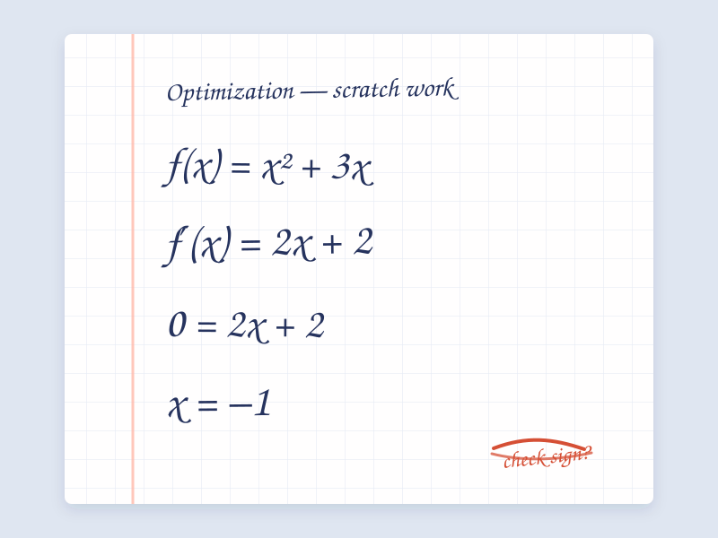

A
Source
100%
Upload a handwritten page. Proofline drafts editable LaTeX and keeps the symbols, steps, and even mistakes that are actually on the page.
This public demo uses deterministic placeholder output and keeps uploads in your browser. A live model backend is not connected.

Transcription, not grading. You decide what is correct.
Editable by design. Review every line before export.
Purpose-built. Math fidelity is the only job.
The transcription desk
or choose a file from your device
Illustrative output. The connected GLM model will replace this sample response.
Evaluation method
The public repository ships synthetic fixtures only. They test whether a model copies visible notation faithfully, keeps long derivations consistent, and preserves an intentional source error instead of silently fixing it.
Private academic records are not part of the public dataset. The original development corpus and derived raw outputs were removed. New public scorecards should be generated from the synthetic fixtures.
Read the data policyThe target is what the writer put on the page—not what the answer should have been.
Names, signs, indices, and inequality directions should survive a long derivation.
The source, LaTeX, and rendered proof stay together so errors are easy to catch.